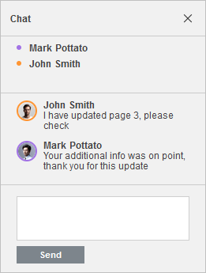

Komunikacija u realnom vremenu
Presentation Editor vam omogućava da održavate stalni timski pristup toku rada: delite datoteke i fascikle, sarađujete na prezentacijama u realnom vremenu, komentarišete određene delove prezentacija koji zahtevaju dodatni unos trećih strana, čuvate verzije prezentacija za buduću upotrebu.
U Presentation Editor-u možete komunicirati sa svojim ko-urednicima u realnom vremenu koristeći ugrađeni alat Ćaskanje, kao i niz korisnih dodataka, npr. Telegram ili Rainbow.

Da biste pristupili alatu Ćaskanje i ostavili poruku drugim korisnicima,
-
kliknite na ikonu na levom bočnom panelu, ili
pređite na karticu Saradnja na gornjoj traci sa alatkama i kliknite na dugme Ćaskanje, - unesite tekst u odgovarajuće polje ispod,
- pritisnite dugme Pošalji.
Poruke iz ćaskanja se čuvaju samo tokom jedne sesije. Za diskusiju o sadržaju prezentacije, bolje je koristiti komentare koji se čuvaju dok se ne obrišu.
Sve poruke koje su ostavili korisnici biće prikazane na panelu sa leve strane. Ako postoje nove poruke koje još niste pročitali, ikona za ćaskanje će izgledati ovako – .
Da biste zatvorili panel sa porukama ćaskanja, ponovo kliknite na ikonu .